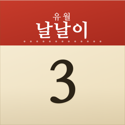

날날이
하루 한 장, 넘기는 종이 달력
벽에 걸린 일력을 넘기던 감성을 iPhone과 Mac에 담았습니다. 오늘 날짜를 큼직하게, 음력과 24절기·공휴일을 한지 질감 위에 정갈한 한글 글씨체로 보여드립니다.
- 음력 날짜와 24절기, 공휴일·대체공휴일
- 일력 · 월력 · 연력 세 가지 보기
- 내 일정과 D-day, 홈 화면 위젯
- 계정도 서버도 없이 기기에 저장

하루 한 장, 넘기는 종이 달력
벽에 걸린 일력을 넘기던 감성을 iPhone과 Mac에 담았습니다. 오늘 날짜를 큼직하게, 음력과 24절기·공휴일을 한지 질감 위에 정갈한 한글 글씨체로 보여드립니다.